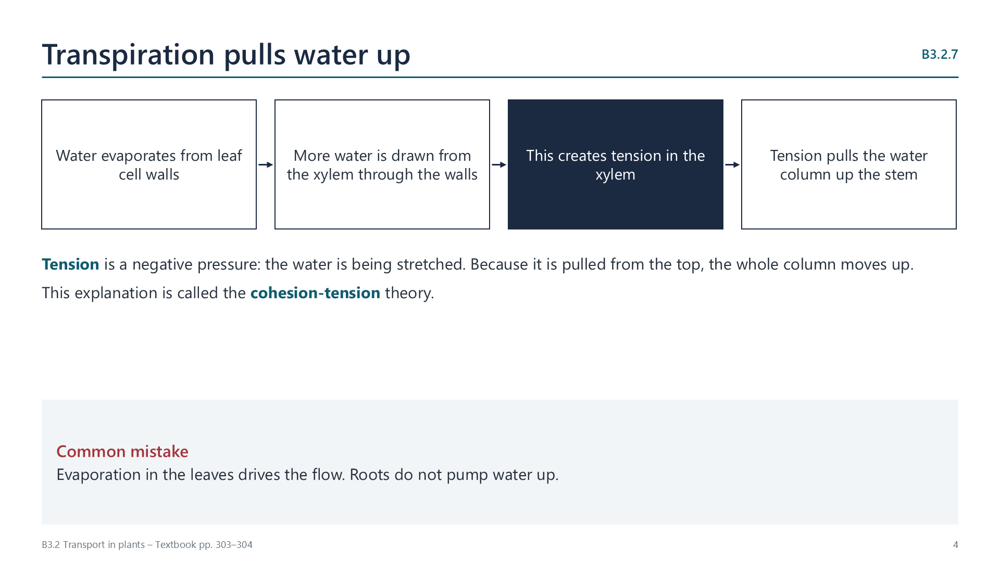

How transpiration moves water from roots to leaves
pp. 303–307- Water evaporates from cell walls in the leaf.
- More water is drawn out of xylem vessels and through cell walls by capillary action.
- This generates tension, or negative pressure, in the xylem.
- Cohesion between water molecules keeps the column continuous, so the tension pulls water up from the roots.
Adhesion between water and hydrophilic cell walls helps too. The plant spends no ATP on this movement, because the Sun supplies the energy for evaporation.

Evidence for tension: trunks of trees shrink slightly in the day, when transpiration is fastest. If a xylem vessel is pierced, air is drawn in and water does not spurt out.
Watch out: water is pulled from above, not pushed from below.